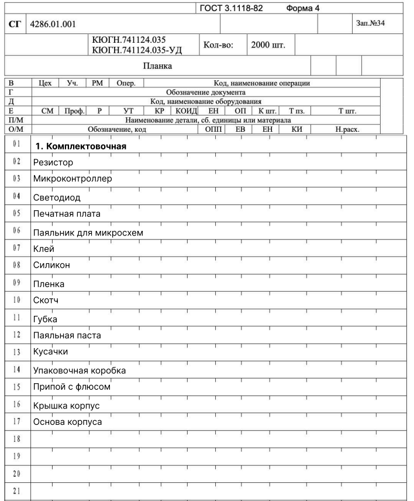
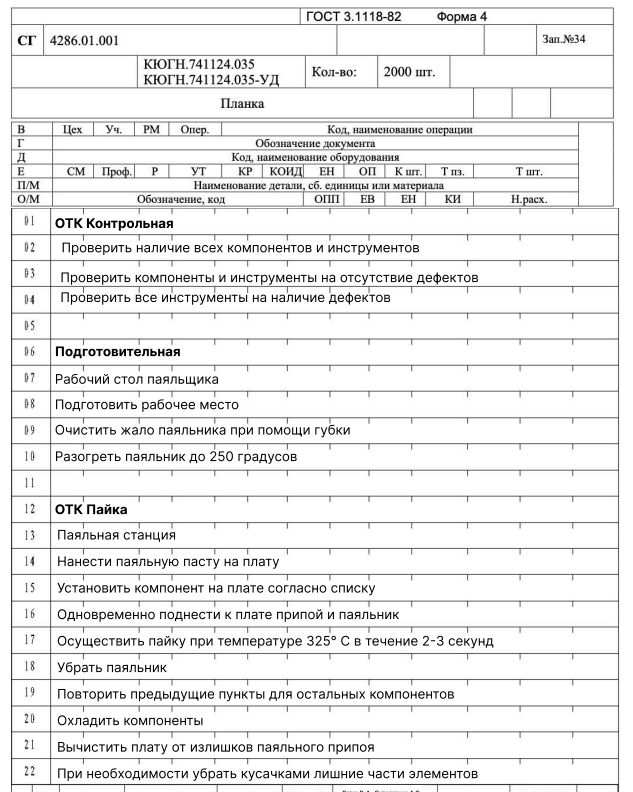
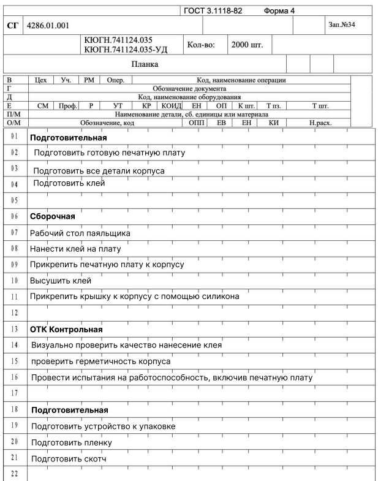

В этом разделе размещается видео с пошаговым процессом сборки устройства: монтаж компонентов на плату, установка платы в корпус из алюминиевых профилей, сборка крышек.
Видео сборки будет добавлено.
Поместите файл video/assembly.mp4 в проект.
Маршрутная карта по ГОСТ 3.1118-82 (форма 4), обозначение ИЭМТ.436234.110, изделие БП-LM350, партия 100 шт. Содержит последовательность технологических операций изготовления.
| Операция | Содержание |
|---|---|
| Комплектовочная | Подготовка ЭРИ, печатной платы, корпуса, крышки, монтажных материалов согласно ведомости подбора (APR). |
| Монтажная | Установить и припаять ЭРИ печатного узла по сборочному чертежу: резисторы MF-25/MF1/SQP/3296W, конденсаторы EEU-FP/JRB/К10-17Б/C410C, транзисторы BC327-16, диоды 1N4007/1N5408, светодиоды L-53GT, мост BR1, клеммники CON1…CON3, предохранитель F1. Стабилизатор (LM338T) установить на радиатор через термопасту. Пайка при t ≈ 325 °C. |
| Контрольная (ОТК) | Проверить качество монтажа и пайки, отсутствие непропаев и перемычек, отмыть остатки флюса. |
| Слесарно-сборочная | Установить плату в корпус на 4 крепёжных отверстия, собрать раму из алюминиевых профилей, установить крышки, обеспечить тепловой контакт радиатора с корпусом. |
| Регулировочная | Настроить выходные напряжения каналов (VR1, VR2): 1,2…16,5 В и 0…15 В; настроить порог ограничения тока (VR3): 0,35…2 А. |
| Приёмо-сдаточная (ОТК) | Контроль выходных напряжений, тока до 2 А, срабатывания защиты по току и нагрева. |
| Маркировочная | Нанести маркировку: обозначение, напряжения, ток, дата изготовления. |
| Упаковочная | Упаковать изделие в плёнку и коробку, вложить руководство (ИЭТР). |


